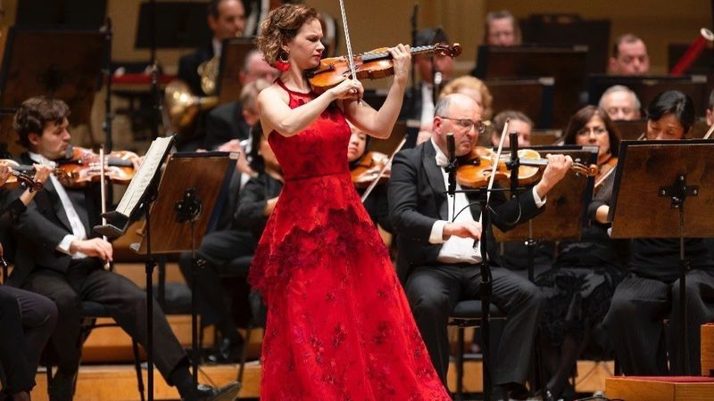

Melhores músicas clássicas na minha opinião.

Top 5:
Ludwig van Beethoven - Sinfonia nº 9 em Ré menor, op. 67
Ludwig van Beethoven - Concerto para violino em Ré maior, op. 61
Felix Mendelssohn - Concerto para violino em Mi menor, op. 64
Jean Sibelius - Concerto para violino em Ré menor, op. 47
Amadeus Mozart - Sinfonia nº 40 em Sol menor, K. 550